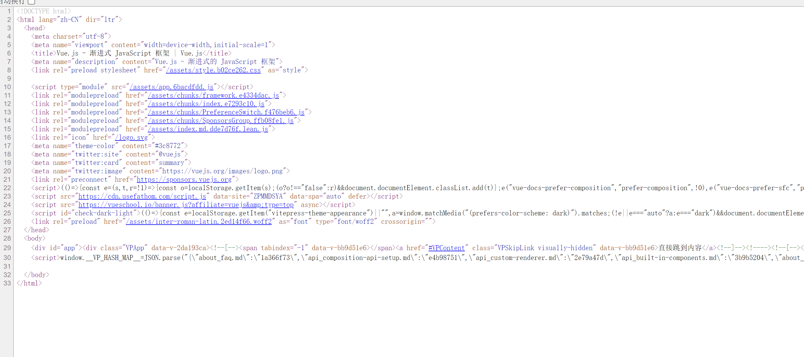
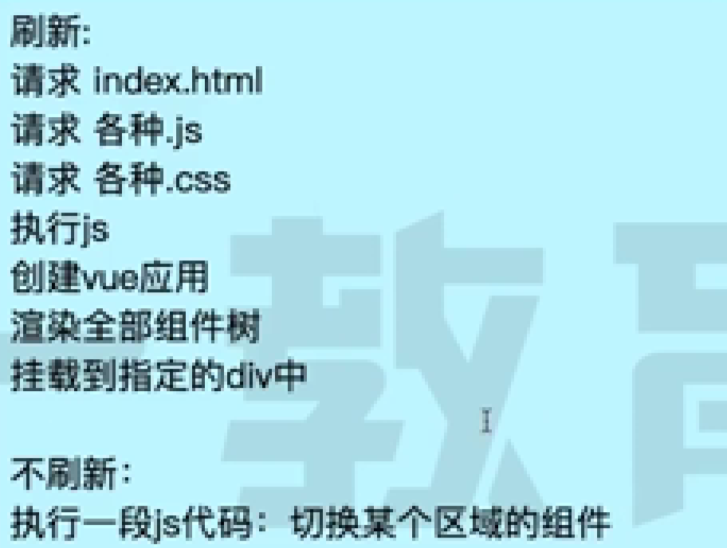

SSR (Server side Render) 服务器端渲染。
渲染：页面形成的过程，html 文件，内容形成的过程。
CSR (client side Render) 客户端渲染
渲染：页面内容通过 js 执行形成。
服务端渲染
在服务器端把整张页面传给浏览器

公司的官网代码采用的就是服务端渲染
hexo 采用的就是服务端渲染
优点：
前端压力小，直接渲染
有利于 SEO (搜索引擎优化)
缺点：
1.服务器压力大
前后端分离

查看网页源代码以后会发现服务器给的是一个空的 html，整个页面都由 js 来创建，在浏览器端组装页面

优点
前后端分离， 前端（UI + 交互）， 后端（API 和 数据）
体验好（native). SPA
缺点
首屏加载慢 （落地页）
SEO 不好
单页应用

因为如果跳转页面就要重新向服务器请求的话，那切来切去还是要重新加载页面。所以希望把网页也做成单页，变成像客户端一样的应用程序，所以点击跳转页面的时候，通过 js 把当前页面的内容删掉，再重新构建新的元素，页面不刷新。
vue 框架

框架是用来降低复杂度的，运行在浏览器中
利用 vue 进行无刷新界面跳转的优点

同构（Vue SSR, SSR + CSR)
nodejs， 会 js 就可以开发服务端。
缺点：服务端要跑一次，客户端也要渲染（浪费资源）